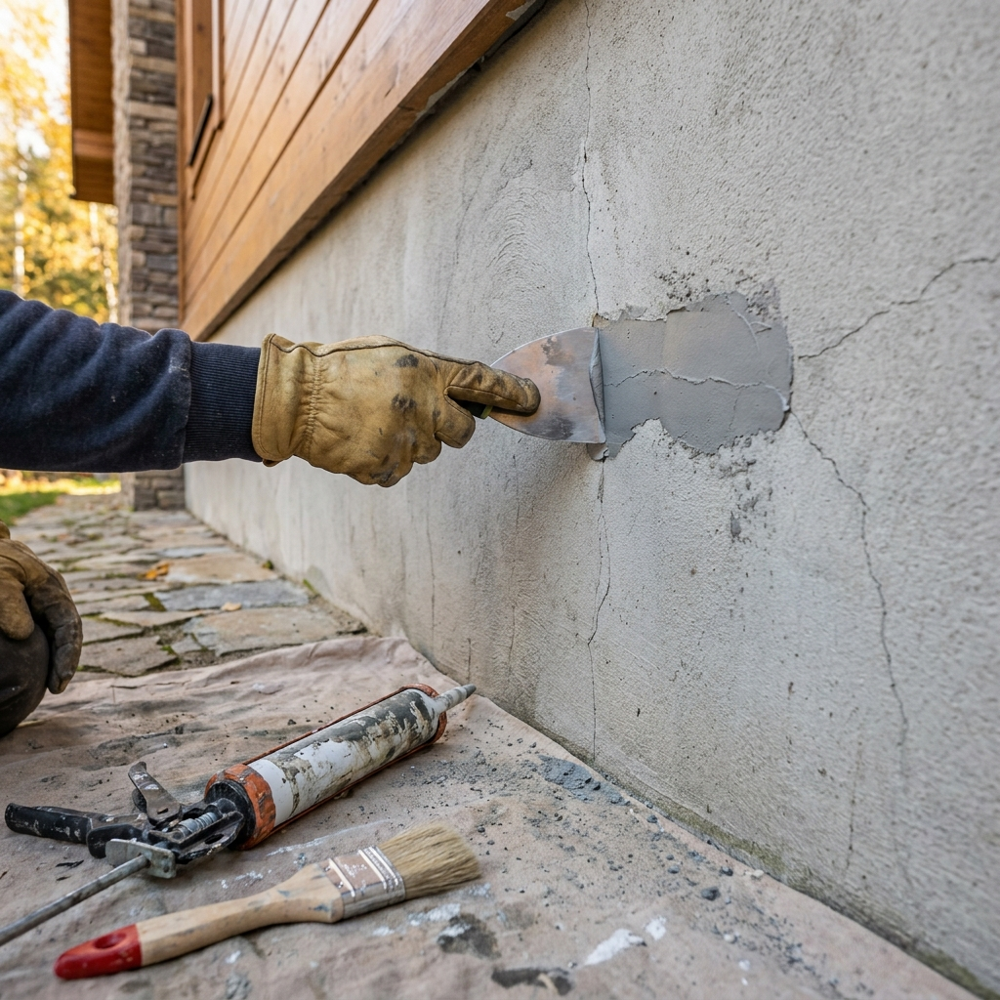
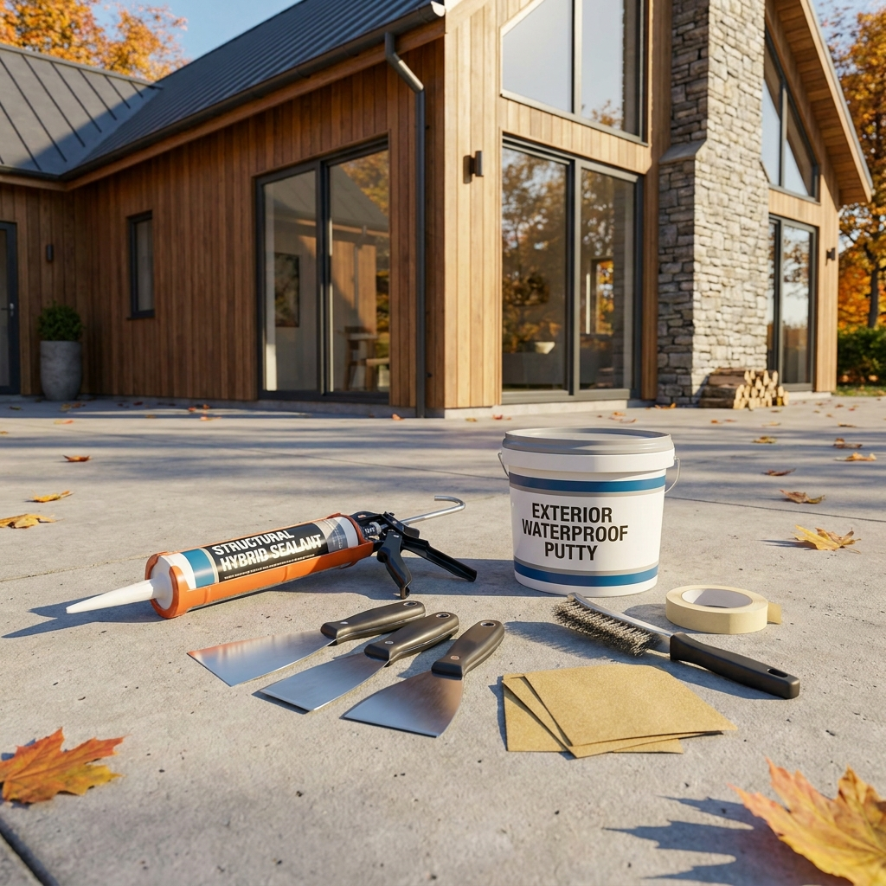

전원주택 외벽 크랙 보수 퍼티 셀프 시공 방법 — 미세 균열 vs 구조적 균열 판단 기준과 방수 실리콘 보수 비용 비교
전원주택의 외벽 미세 균열(크랙)은 영하로 떨어지는 겨울이 오기 전인 10월 가을철에 보수하는 것이 가장 효과적입니다.
방치된 균열 틈새로 가을비가 스며든 채 겨울철 영하의 추위를 맞으면, 물이 얼어 부피가 팽창(동결융해)하면서 작은 금이 순식간에 외벽 탈락과 실내 누수로 번지기 때문입니다.
균열 폭 0.3mm 미만의 단순 헤어크랙은 외부용 아크릴 퍼티나 변성 실리콘 자재(재료비 2~3만 원대)를 활용해 누구나 셀프로 손쉽게 보수할 수 있습니다.
전문 업체를 불러야 하는 구조적 균열과 셀프 보수가 가능한 표면 균열의 구별법, 단계별 V커팅 및 퍼티 마감 시공 순서, 그리고 비용 비교표를 상세히 안내해 드립니다.

전원주택 콘크리트 외벽의 미세 크랙에 외부용 탄성 퍼티를 도포하여 보수하는 작업 모습 / AI 제작 이미지
01 | 가을철 외벽 크랙 보수가 왜 시급한 필수 과제인가?
전원주택 외벽은 계절에 따른 급격한 온도 변화와 건조 수축, 자외선 노출로 인해 세월이 흐르며 크고 작은 균열이 발생하게 됩니다.
특히 가을(10월)은 외벽 보수의 최적기이자 마지막 골든타임입니다.
여름철 장마와 태풍을 거치며 외벽에 생긴 미세한 틈새를 그대로 둔 채 겨울을 맞이하면 치명적인 피해가 발생합니다.
틈새로 스며든 빗물과 습기가 겨울철 기온 강하로 얼어붙으면 약 9%의 체적 팽창이 발생하며, 이 강력한 팽창 압력이 콘크리트와 몰탈을 내부에서부터 깨뜨리는 '동결융해(Freeze-Thaw) 현상'을 일으킵니다.
미세했던 금이 손가락이 들어갈 만큼 벌어지거나 단열재가 썩고 실내 도배지에 곰팡이가 피어나는 대형 하자로 이어지기 전에 가을철 선제적 보수가 필수적입니다.
02 | 미세 균열(헤어크랙) vs 구조적 균열 자가진단 기준표
외벽의 금을 발견했을 때 가장 먼저 해야 할 일은 이것이 '셀프로 고칠 수 있는 표면 균열'인지, 아니면 '구조적 안전 진단이 필요한 균열'인지를 판정하는 것입니다.
| 구분 |
미세 균열 (헤어크랙 / 건조 수축) |
구조적 균열 (침하 / 하중 결함) |
| 균열 폭 기준 |
0.3mm 미만 (명함이나 복사용지 1~2장 두께) |
0.5mm ~ 1mm 이상 (동전이나 카드 두께 이상) |
| 균열 형태 및 방향 |
표면 거미줄 모양, 무작위 미세 잔금, 세로형 잔금 |
대각선 방향 관통형, 창호 모서리 45도 대형 균열, 지그재그형 |
| 단차 발생 여부 |
벽면 양쪽의 높낮이 차이(단차)가 전혀 없음 |
균열을 경계로 손으로 만졌을 때 벽면 높낮이 단차가 느껴짐 |
| 원인 |
외벽 미장 몰탈의 자연스러운 건조 수축, 기온차 표면 팽창 |
건물 기초 지반 침하, 과도한 구조 하중, 내진 결함 |
| 위험도 및 조치 |
셀프 보수 가능 (방수 퍼티, 탄성 실란트 충진) |
전문 업체 의뢰 필수 (에폭시 인젝션 주입, 구조 보강) |
| 방치 시 문제 |
동결융해로 균열 확대, 외벽 페인트 들뜸 및 변색 |
내부 철근 부식, 구조적 내력 약화, 심각한 실내 누수 |
벽면에 생긴 균열에 명함 모서리를 대보았을 때 들어가지 않거나 가볍게 걸리는 정도라면 누구나 셀프로 완벽하게 보수할 수 있는 수준입니다.
03 | 셀프 시공 vs 전문 외벽 보수 업체 비용 비교
전원주택 외벽 보수를 셀프로 진행할 때와 전문 도장·방수 업체를 부를 때의 비용 차이를 명확히 비교해 드립니다.
| 구분 |
셀프 DIY 보수 (소규모 균열 10~20군데) |
전문 외벽 보수 업체 (외벽 전체 시공) |
| 소요 비용 |
약 3만 원 ~ 6만 원 (자재 직접 구매) |
기본 50만 원 ~ 150만 원 이상 (인건비+장비대) |
| 필요 자재 및 장구 |
외부용 퍼티(1~2통), 실리콘건, 헤라, 프라이머, 사포 |
고소작업대(스카이차), 고압세척기, 에폭시 주입기 |
| 소요 시간 |
반나절 (약 2~4시간 내외 작업) |
1~2일 소요 |
| 적용 범위 |
1층 및 사다리 접근이 안전한 2층 하부 구간 |
2층 이상 고소 외벽 전체 및 옥상 파라펫 구간 |
| 경제적 장점 |
비용 절감 90% 이상, 발견 즉시 수시 대처 가능 |
완벽한 품질 보증 및 위험한 고소 작업 안전성 확보 |
지상에서 손이 닿거나 1단 사다리로 안전하게 작업할 수 있는 1층 외벽의 미세 크랙은 비싼 인건비를 들이지 않고 자재만 구매해 직접 시공하는 것이 훨씬 경제적입니다.
04 | 성공적인 외벽 크랙 보수를 위한 필수 자재 4종
셀프 보수를 위해 철물점이나 온라인에서 준비해야 할 핵심 재료들입니다.
1. 외부용 탄성 아크릴 퍼티(핸디코트 외부용 / 워터프로): 실내용 퍼티는 물에 녹아내리므로 반드시 '외부용(외벽용/방수용)' 표기를 확인해야 합니다. 신축성이 있는 탄성 퍼티를 선택해야 기온 변화에 따른 재균열을 막아줍니다.
2. 우레탄 변성 실리콘(변성 실란트 MS 실리콘): 균열 폭이 조금 넓은 곳(0.3~1mm)에는 퍼티보다 탄성 복원력이 뛰어난 변성 실리콘이 적합합니다. 일반 초산/비초산 실리콘과 달리 경화 후 위에 페인트 칠이 가능한 수용성/변성 실란트를 사야 합니다.
3. 수성 바인더(수성 프라이머): 오래된 콘크리트 벽면의 먼지를 고착시키고 퍼티의 접착력을 극대화해 주는 침투성 하도제입니다.
4. 스크래퍼(헤라), 와이어 브러시, 샌드페이퍼(사포): 균열 틈새의 이물질을 긁어내고 퍼티를 평평하게 펴 바르는 기본 공구입니다.

외벽 크랙 보수를 위해 준비한 외부용 탄성 퍼티, 변성 실란트, 헤라 및 브러시 도구들 / AI 제작 이미지
05 | 5단계 외벽 크랙 퍼티 셀프 시공 실전 순서
전문가처럼 깔끔하고 오래가는 외벽 보수를 완성하는 5단계 표준 시공 절차입니다.
🛠️ 외벽 크랙 보수 5단계 실전 작업 순서
1단계. 바탕면 청소 및 이물질 제거: 와이어 브러시나 스크래퍼로 균열 주변의 들뜬 페인트 가루와 먼지, 이끼를 깨끗하게 털어냅니다. 이물질이 남아있으면 퍼티가 벽에 붙지 않고 떨어집니다.
2단계. V커팅 홈파기 (선택): 균열 깊이가 1mm 안팎인 경우 스크래퍼 모서리로 균열을 V자 형태로 살짝 긁어내어 퍼티가 틈새 깊숙이 채워질 공간을 만듭니다.
3단계. 수성 프라이머(바인더) 붓칠: 붓을 이용해 균열 안쪽과 주변에 프라이머를 얇게 도포하고 약 30분~1시간 동안 건조시켜 접착력을 높입니다.
4단계. 퍼티 충진 및 헤라 밀착 마감: 외부용 탄성 퍼티를 헤라에 덜어 균열 부위에 45도 각도로 강하게 눌러 넣으면서 틈새를 빈틈없이 채운 뒤, 여분의 퍼티를 평평하게 긁어냅니다.
5단계. 건조 후 샌딩 및 발수 페인트 마감: 하루 동안 충분히 건조시킨 후 거친 모서리를 사포로 가볍게 다듬고, 기존 외벽 색상과 동일한 외부용 수성 발수 페인트를 덧칠해 마감합니다.
06 | 실리콘 보수 시 흔히 하는 치명적 실수와 대처법
많은 초보 건축주들이 저지르는 가장 흔한 실수는 아무 실리콘이나 외벽에 쏘는 것입니다.
철물점에서 흔히 파는 일반 투명 실리콘이나 백색 실리콘(초산형, 비초산형 실리콘)을 외벽 크랙에 쏘면 다음과 같은 대형 참사가 발생합니다.
첫째, 일반 실리콘 표면에는 수성 페인트가 전혀 묻지 않고 기름처럼 튕겨져 나갑니다. 그 결과 외벽에 지렁이가 기어간 것 같은 흉측한 실리콘 자국이 영구히 남게 됩니다.
둘째, 일반 실리콘에서 나오는 유포 성분(기름기)이 먼지를 흡착하여 시간이 지나면 균열 자리가 시커멓게 오염됩니다.
따라서 외벽 균열에는 반드시 페인트 칠이 가능한 '변성 실리콘(우레탄 변성 MS 실란트)'이나 '외부용 탄성 아크릴 퍼티'만을 사용해야 합니다.
07 | 외벽 크랙 보수 당일 날씨와 작업 안전 체크리스트
성공적인 시공과 작업자 안전을 위해 작업 당일 반드시 확인해야 할 체크포인트입니다.
🍂 외벽 보수 작업 전 필수 안전 & 환경 체크리스트
• 작업 기온 확인: 영상 5℃ 이상, 28℃ 이하의 건조하고 맑은 날 작업하세요. 영상 5℃ 미만에서는 퍼티가 얼어 접착력을 상실합니다.
• 비 소식 확인: 작업 전 24시간 동안 비가 오지 않아 벽면이 완전히 말라 있어야 하며, 작업 후 최소 24시간 동안 비 예보가 없어야 합니다.
• 안전한 사다리 사용: 2단 사다리 이용 시 지면이 평탄한지 확인하고, 반드시 2인 1조로 다른 한 사람이 사다리 하부를 지지해야 합니다.
• 보호구 착용: 외벽 시멘트 가루와 미세 먼지로부터 눈과 호흡기를 보호하기 위해 방진마스크와 보안경, 작업 장갑을 반드시 착용하세요.
08 | 단열재 탈락 및 내부 누수 예방을 위한 사후 관리법
외벽 크랙 보수를 마친 후에는 1년에 2회(봄 해빙기 3월, 늦가을 10월) 정기적으로 외벽을 순회 점검하는 습관을 들이는 것이 좋습니다.
보수했던 자리가 다시 벌어졌는지 확인하고, 특히 창호 프레임 주변의 코킹 실리콘이 삭아서 벌어지지 않았는지 꼼꼼히 살피셔야 합니다.
외벽에 전체적으로 미세 잔금이 퍼져 있다면 2~3년에 한 번씩 투명 외벽 침투성 발수제를 압축 분무기로 도포해 주면 콘크리트 조직 내부로 물이 침투하는 것을 완벽히 차단할 수 있습니다.
09 | 핵심 요약 및 최종 권장 가이드
전원주택의 건강은 작은 균열을 제때 막아주는 관심에서 시작됩니다.
0.3mm 미만의 미세 헤어크랙은 겨울철 동결 파손을 일으키기 전에 외부용 탄성 퍼티와 변성 실란트로 신속하게 메워주는 것이 주택 수명을 10년 이상 늘리는 비결입니다.
단돈 몇만 원의 자재비와 반나절의 정성만 들이면 수백만 원에 달하는 외벽 누수 공사비를 아낄 수 있습니다.
선선하고 화창한 10월 가을날, 사랑하는 전원주택 외벽을 한 바퀴 둘러보시며 꼼꼼한 월동 준비를 시작해 보시기 바랍니다.
#전원주택외벽보수
#외벽크랙셀프보수
#외부용탄성퍼티
#핸디코트워터프로
#콘크리트균열보수
#헤어크랙자가진단
#변성실리콘시공
#전원주택월동준비
#외벽방수비용
#DIY주택관리